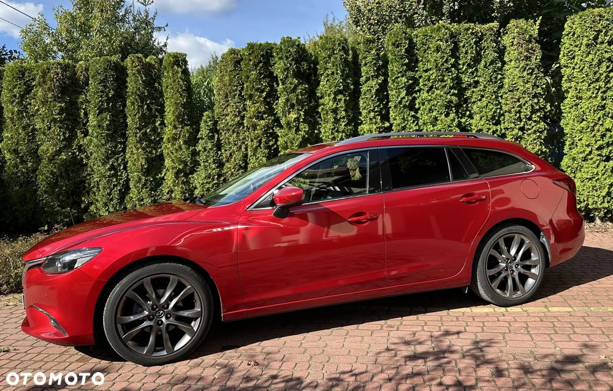
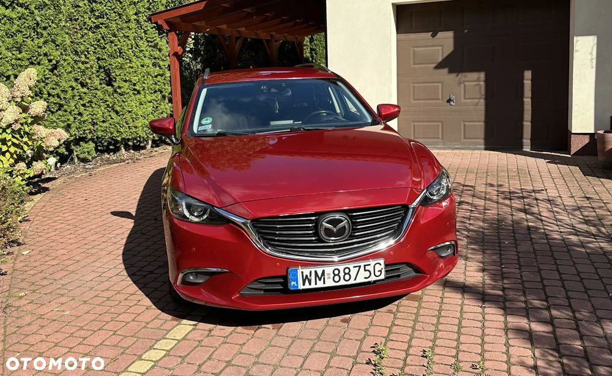
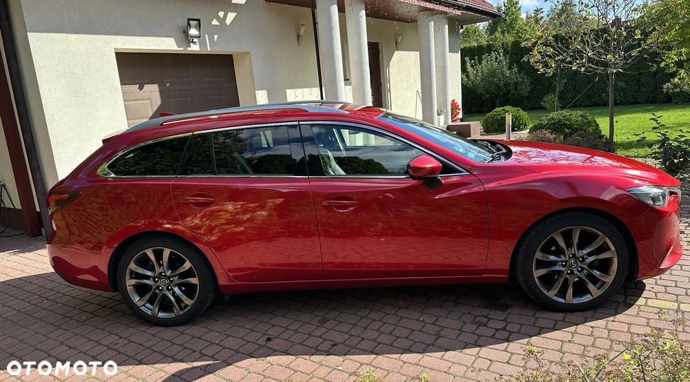
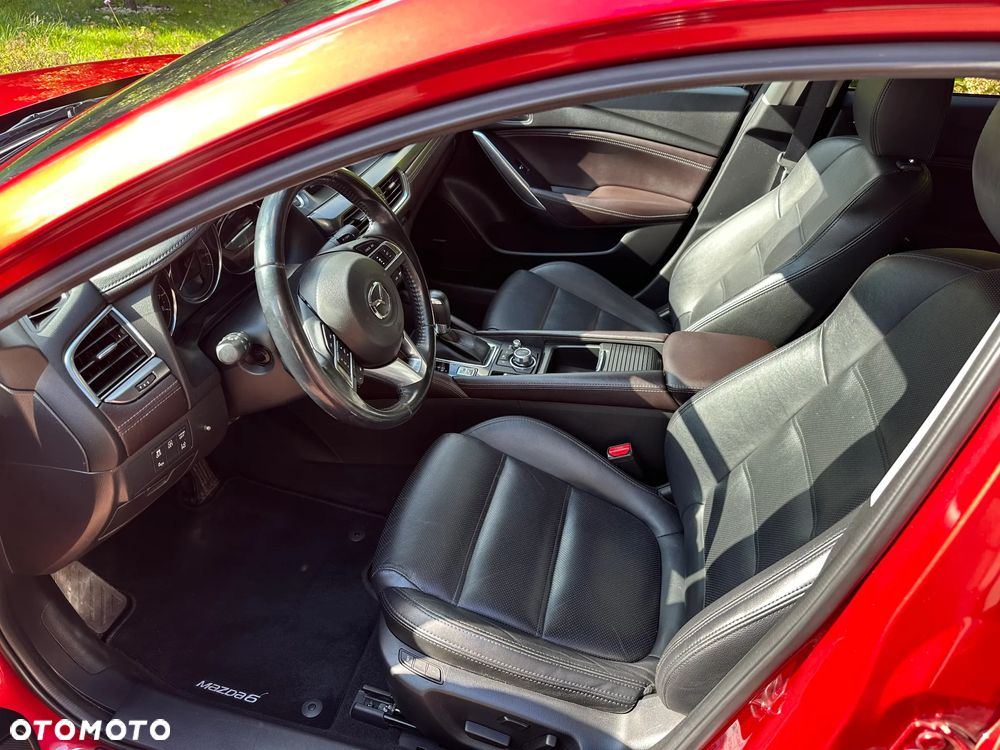
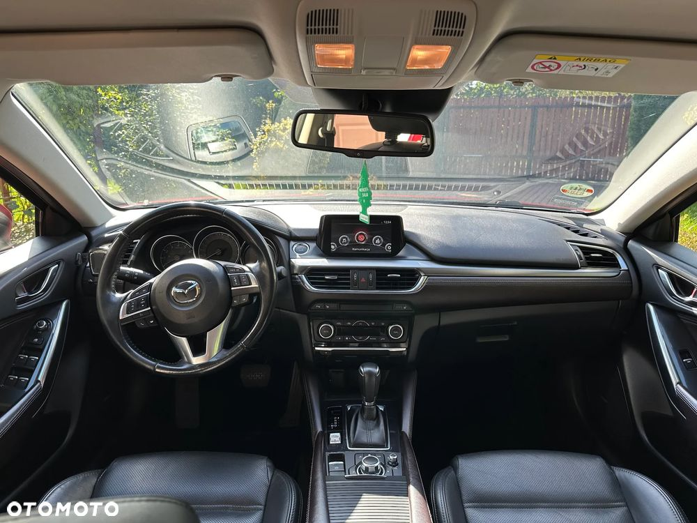
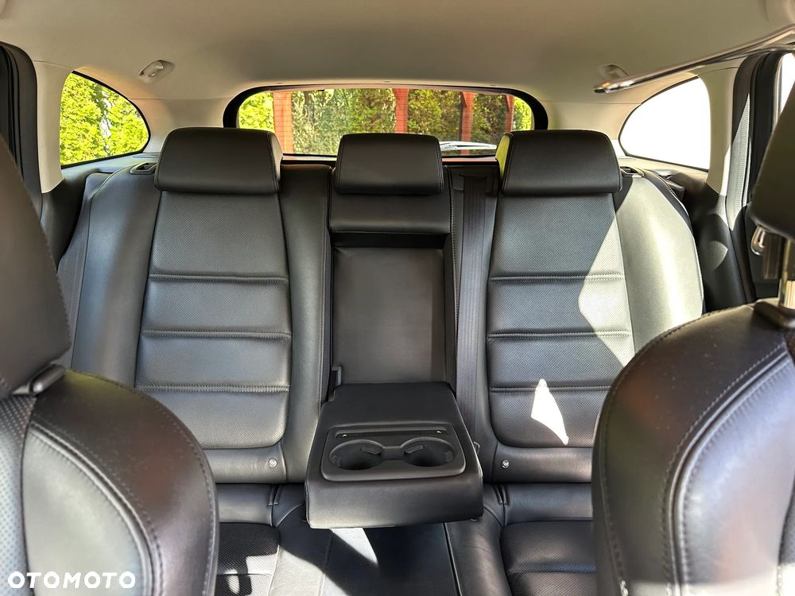
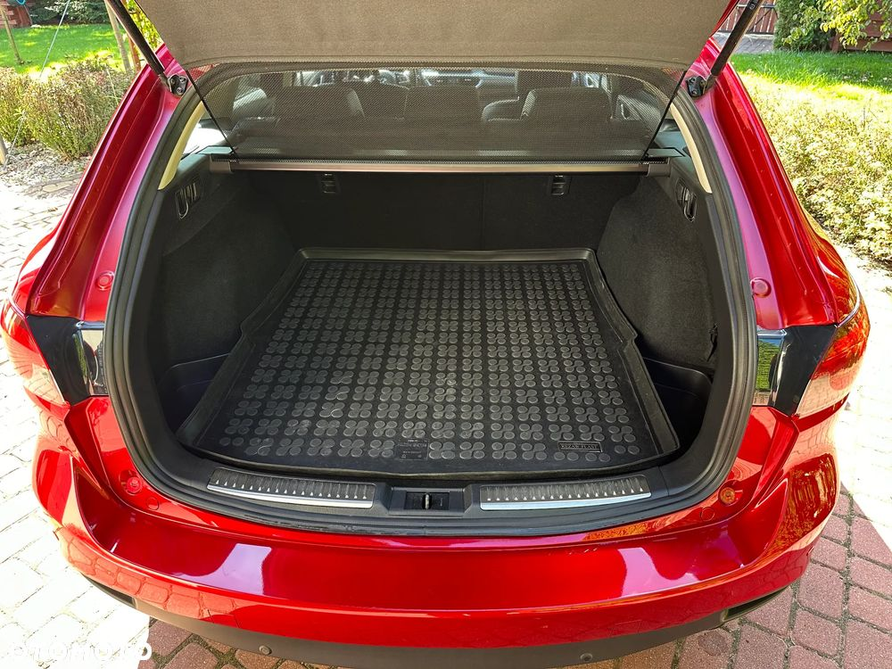
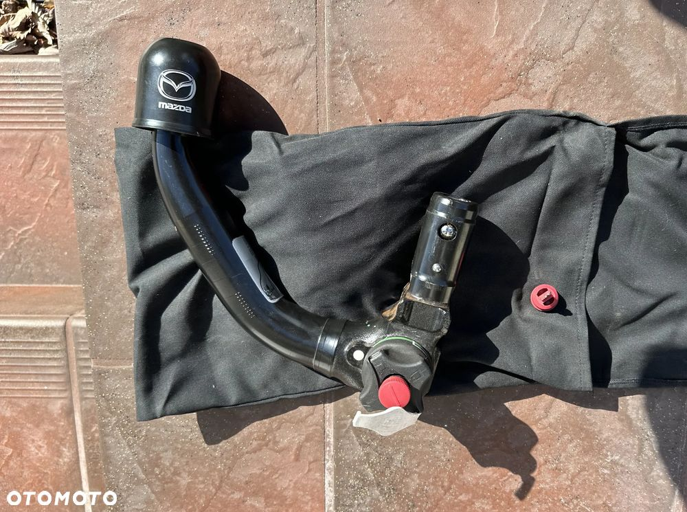

Mazda 6 SkyPassion i-Eloop, kombi
2.5 benzyna, 192 KM, Skrzynia automatyczna z łopatkami,
Pierwszy właściciel. Samochód kupiony w Salonie Mazdy w Polsce i rejestrowany w Belgii, po roku wrócił jako mienie przesiedleńcze z pierwszą rejestracją w Polsce 06.07.2017. Bezwypadkowy, Garażowany, W bardzo dobrym stanie
Przebieg 157 000 km.
Wersja z najbogatszym wyposażeniem oferowanym w ówczesnym czasie na rynku polskim:
- skórzana tapicerka,
- podgrzewane fotele przód i tył,
- elektrycznie regulowane fotele,
- pamięć fotela kierowcy,
- automatyczna klimatyzacja dwustrefowa
- wyświetlacz Head Up Display
-zaawansowane światła LED z doświetlaniem zakrętów, oświetlaniem znaków drogowych,
adaptacyjnymi światłami dziennymi i nocnymi
- system monitorowania martwego pola
- elektrycznie składane lusterka
- czujniki parkowania przód i tył
- system monitorowania ciśnienia opon
- przednie i boczne poduszki powietrzne, kurtyny powietrzne
- wielofunkcyjna kierownica
- system monitorowania pasa ruchu
- system bezkluczykowego uruchamiania silnika
- system i-stop (automatycznie wyłączający silnik na postoju)
- przestrzenny system nagłośnieniowy Bose
- kamera cofania (zintegrowana z wyświetlaczem centralnym)
- zestaw głośnomówiący Bluetooth
- system nawigacji Mazda
- adaptacyjny układ utrzymywania stałej prędkości (aktywny tempomat - MRCC)
- czujnik deszczu i zmierzchu
- hak holowniczy (wpinany Mazdy)
- aluminiowe felgi 19 cali
- drugi komplet kół zimowych z felgami aluminiowymi 17 cali
- alarm oraz dodatkowy dodatkowym zabezpieczeniem montowanym w serwisie
Zapraszamy do kontaktu oraz na jazdę próbną.







